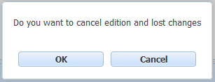

The option Cancel Checkout CANCELS all the changes made to the document and deletes the temporal work versions stored for the user in the OPD server.

View: CheckIn (Confirms changes in a locked document) y CheckOut (Locks a Document for editing)